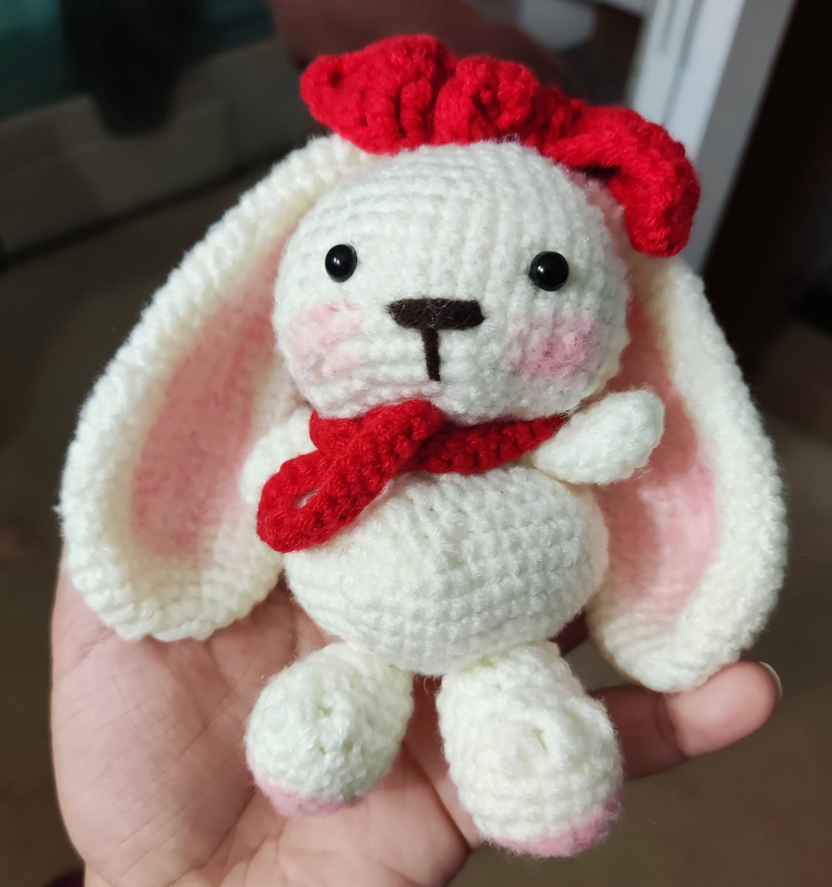

there, I'm Maria, but I prefer to be called Mada, and I'm a graphic design student with a passion for a variety of hobbies, including dancing, singing, reading, crochet, and drawing.
However, on this page, I'll be focusing primarily on crochet and drawing. Join me on this creative journey as we explore the world of yarn and art. Let's get started!
